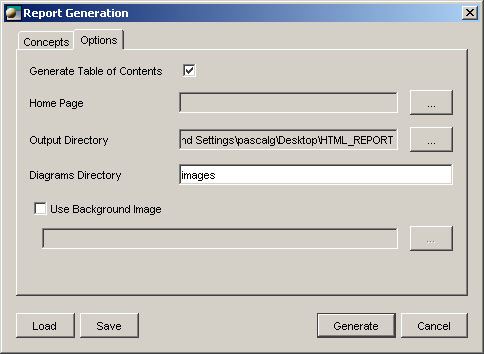

Generating HTML documentation
The report is a set of HTML pages. Each page corresponds to a concept.
And thanks to hyperlinks, it is possible to navigate between pages.
Open ModelSphere offers the possibility to generate HTML documentation
from any semantic object. The report can be used to publish the contents of a model
thus providing quick access to the information. This useful feature also allows you
to share information easily. As a matter of fact, it can be integrated into a Web site
or consulted locally.
If you generate a report for a data model, it will be an excellent reference for the
users of a database built from this model. And, offering a lot of flexibility as to contents
and format, the Generate Report feature will prove to be essential.
To generate a report:
- Make your selection in the explorer window, it can be anywhere from the
project level to the lowest level. This selection will be, recursively, the source
of information for the report generation process.
- From the main menu, select Tools > Generate > Report. The Report Generation
window appears.

- Check the concepts you want to add to the report, uncheck the ones you
do not want. It is possible to Save your concept setting and Reload it whenever
you need it.
- Set the parameters: color, dimension, alignment, general settings, etc. Each
concept may be set differently. In the concepts’ list, expand the node by
clicking the handle next to it. You can also set lower levels of concepts in
the same manner.
- Click the Option tab to customize the options.

- Generate Table of Contents: check the box if you want a table of
contents to be generated. The table of contents is located on the
left side of the report. It lists all the concepts included in the report.
- Home Page: choose the page that will open with main.html
- Output Directory: choose in which directory the HTML files will be
generated. The default output directory is the same one as in the
Tools: Options menu. Changing the output directory here will not
change it in the Options menu.
- Diagrams Directory: name the directory in which the diagrams’
JPEG images will be stored. Just type the directory’s name, it will
be created next to the output directory. Ex.: directory’s name is ‘images’.
Output directory is C:\report. Then the Diagrams Directory
will be C:\report\images
- Use Background Image: check the box if you want a background
image to appear on every page (except TOC.htm).
- Click Generate and Close. Once files are generated, you will get a completion
notice. You can Show details or not. In the Details section, there is
information regarding date and time of HTML generation, generated files
and their location, as well as errors, if any.
- Navigate to the output directory and open index.htm.

From there, you can use the hyperlinks to navigate through the different
files.
If you need to generate
HTML documentation for
more than one model at a
time, make sure that all the
physical names are different.
Remember, template files
can be customized, thus
customizing the report’s
content.